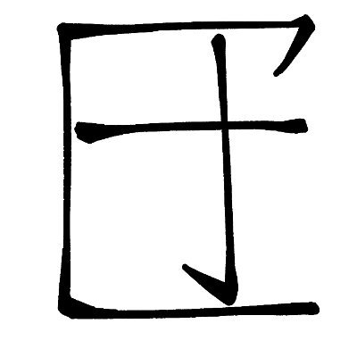

Stargazer 8964
@SHUGE0731
RT @NSD_cre: #明日方舟 #arknights #アークナイツ
有新的arg解密
https://t.co/I63WxVAXBY
输入dev log
【【明日方舟】解密最新成果——ama-10的开发日志】
https://t.co/PQxxyRMxrp

SD N (稿/request募集中
@NSD_cre
#明日方舟 #arknights #アークナイツ
有新的arg解密
https://t.co/I63WxVAXBY 输入dev log
【【明日方舟】解密最新成果——ama-10的开发日志】 https://t.co/PQxxyRMxrp